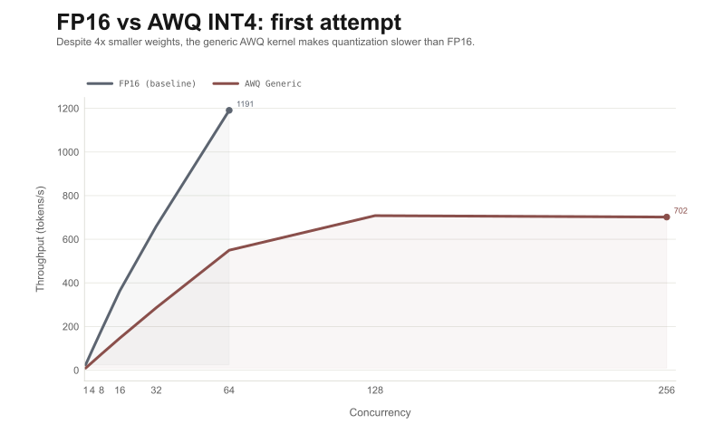
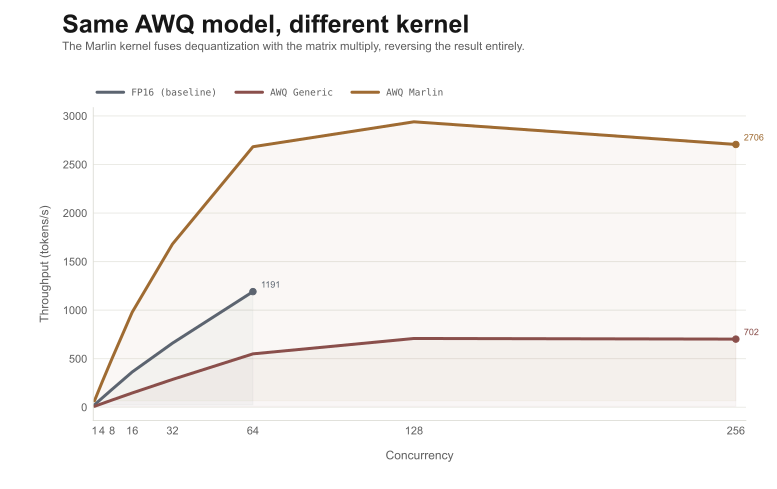
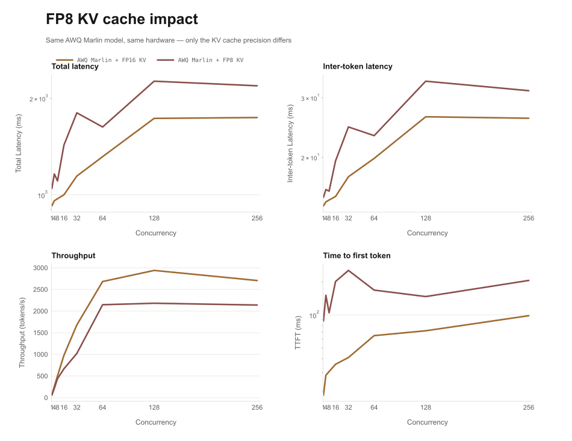
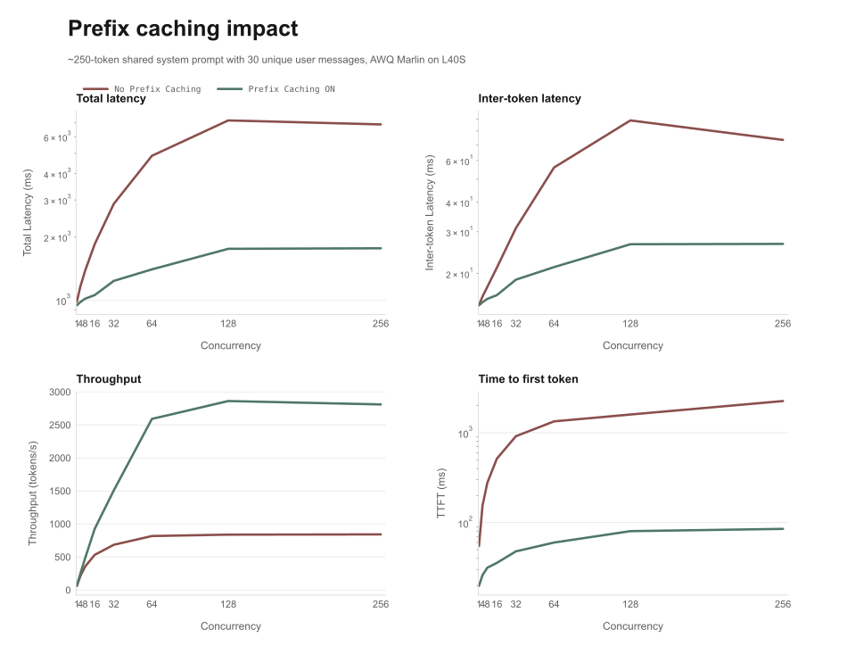
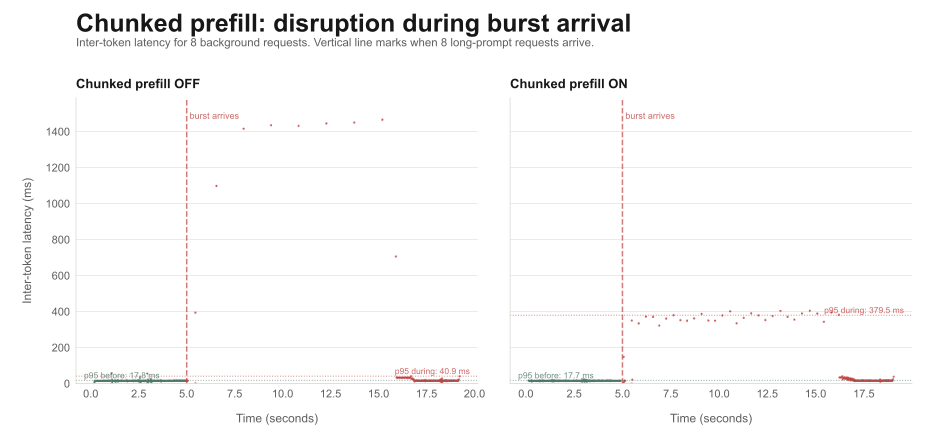

Making Models Fit: Quantization and Memory Optimization for Single-GPU Inference
Introduction
In the previous post, we built two inference servers for Qwen-14B on an L40S GPU: a naive one that collapsed under load, and a vLLM-backed one that scaled to ~1,200 tokens per second at concurrency 64. The vLLM server was dramatically better, but we never questioned one thing: the model itself.
Qwen-14B in FP16 occupies roughly 28 GB of the GPU's 48 GB VRAM. After accounting for activation memory and framework overhead, that leaves about 17-18 GB for KV caches. Every concurrent request consumes part of that budget as it generates tokens. Once the budget is full, the server either queues new requests or starts evicting active ones.
So the question becomes: what if we could reclaim some of that 28 GB?
There are two ways to free GPU memory for an inference server. You can make the model weights smaller, or you can make the KV caches more efficient. This post explores both.
We will start with quantization, which reduces the precision of model weights to use less memory per parameter. Then we will look at three KV cache optimizations that change how the server manages memory during generation. For each technique, we will run the same concurrency sweep from the previous post and compare the results.
By the end, we will have a results matrix showing which optimizations matter most, how they interact when stacked together, and where the tradeoffs are.
The Memory Budget, Revisited
Before optimizing anything, it helps to have a clear picture of where every gigabyte goes.
In the first post, we walked through the loading pipeline and ended with a VRAM breakdown for our setup. Let's revisit that breakdown, because every optimization in this post is about shifting these numbers.
VRAM budget: Qwen-14B FP16 on L40S
The KV cache budget is what determines how many users the server can handle at the same time. Each active request builds up a KV cache as it generates tokens. Longer prompts and longer responses mean bigger caches. More concurrent requests mean more caches competing for the same pool of memory.
With 17-18 GB of KV cache space and vLLM's paged attention managing allocation, the server handled 64 concurrent requests in our previous benchmarks. But the model weights are consuming more than half the GPU. If we could cut that in half, or even to a quarter, the KV cache budget would grow substantially. More cache space means more room for concurrent requests, which means higher throughput.
That is what quantization does.
Quantization: Making 14 Billion Parameters Smaller
A neural network parameter is a number. In FP16, each number takes 2 bytes. Multiply that by 14 billion parameters and you get roughly 28 GB of weight data.
Quantization reduces the number of bits used to store each parameter. If you go from 16 bits down to 4 bits, the same 14 billion parameters fit in roughly 7 GB instead of 28 GB.
Weight memory at different precisions (14B parameters)
The obvious concern is quality. You cannot just chop bits off a number and expect the model to behave the same way. Naive truncation would destroy the model's outputs. The challenge is finding a way to represent the same weights with fewer bits while preserving the model's behavior as closely as possible.
This is a well-studied problem, and several quantization techniques exist. We will benchmark two of the most widely used: AWQ and GPTQ.
AWQ and GPTQ: Two Approaches to the Same Problem
Both AWQ and GPTQ produce INT4 quantized models. The difference is how they decide which information to preserve when reducing precision.
AWQ (Activation-Aware Weight Quantization) takes the approach that not all weight channels are equally important. Some channels have a disproportionate effect on the model's output because the activations flowing through them tend to be large. AWQ identifies these channels by analyzing activation patterns on a calibration dataset, then preserves their precision while quantizing the rest more aggressively.
GPTQ takes a different approach. It processes the model layer by layer, using a calibration dataset to measure how much error each quantization decision introduces. It then adjusts the remaining weights in that layer to compensate for the error, minimizing the cumulative impact on the model's output.
Both techniques are applied offline. You do not run them yourself. Someone has already quantized the model and published the result. From an engineering perspective, choosing between AWQ and GPTQ is like choosing between two pre-built artifacts. You download one, point vLLM at it, and measure the results.
For our benchmarks, we use the published AWQ and GPTQ INT4 variants of Qwen2.5-14B-Instruct from Hugging Face.
Setup
The setup is identical to the previous post. Same hardware (L40S, 48 GB VRAM), same vLLM serving stack, same observability pipeline, same load generator. The only variable is the model artifact.
Loading a quantized model in vLLM requires minimal configuration changes:
# AWQ variant with Marlin kernel
engine = AsyncLLMEngine.from_engine_args(
AsyncEngineArgs(
model="Qwen/Qwen2.5-14B-Instruct-AWQ",
quantization="awq_marlin",
dtype="float16",
gpu_memory_utilization=0.9,
)
)
# GPTQ variant with Marlin kernel
engine = AsyncLLMEngine.from_engine_args(
AsyncEngineArgs(
model="Qwen/Qwen2.5-14B-Instruct-GPTQ-Int4",
quantization="gptq_marlin",
dtype="float16",
gpu_memory_utilization=0.9,
)
)The model weights are stored in INT4, but the actual matrix multiplications happen in FP16. During each forward pass, vLLM runs a dequantization step that converts the INT4 weights to FP16 just before they are used in a computation. The FP16 values are temporary. Once the multiply is done, they are discarded, and the INT4 originals remain in VRAM.
This means the memory savings are permanent. The weights always occupy 4x less space. But every forward pass pays a small cost to dequantize them.
In practice, this cost is often offset by a different effect. During decode steps, the GPU spends most of its time reading weight data from VRAM. This is a memory-bandwidth bottleneck, not a compute bottleneck. With INT4 weights, the GPU reads 4x less data per forward pass. The dequantization math is cheap compared to the bandwidth saved, so decode can actually get slightly faster with quantized weights.
Prefill is different. It processes many tokens at once and is compute-bound rather than bandwidth-bound. There, the bandwidth savings matter less, and the dequantization overhead is more visible. The net effect on prefill speed is closer to neutral.
The New Memory Budget
With INT4 quantization, the weight footprint drops from ~28 GB to ~7 GB. That frees roughly 21 GB of VRAM.
VRAM budget: Qwen-14B INT4 on L40S
The KV cache budget more than doubled. vLLM sees the extra memory during its startup profiling pass and automatically allocates more KV cache blocks. Without changing anything about the serving logic, the server can now maintain KV caches for significantly more concurrent requests.
So we ran our first benchmark: the same concurrency sweep from the previous post, but with the AWQ INT4 model instead of FP16.

The result was not what we expected. At concurrency 1, FP16 produced 24.8 tokens per second. The AWQ INT4 model produced only 9.5 tokens per second. At concurrency 64, the gap persisted: FP16 reached 1,191 tokens per second while AWQ managed only 550. We freed 21 GB of VRAM and got a slower server.
The Kernel Matters
The chart above shows a model with 4x smaller weights running slower than the original. That does not match the theory. Less data to read from VRAM should mean faster decode steps, not slower ones. So what went wrong?
The answer is in the dequantization step. The INT4 weights sit in VRAM permanently, but the GPU computes in FP16. Every forward pass has to convert those INT4 values to FP16 before the matrix multiplication can happen. How that conversion is implemented turns out to matter more than the quantization itself.
The benchmark above used quantization="awq", which selects vLLM's generic AWQ kernel. This kernel performs dequantization as a separate pass: it reads the INT4 weights from VRAM, converts them to FP16 in a temporary buffer, then reads them again for the actual matrix multiply. Two trips through memory instead of one.
That extra memory pass is expensive. On an L40S with 864 GB/s of memory bandwidth, reading the weights twice instead of once adds real overhead to every decode step. The generic kernel's dequantization cost outweighs the bandwidth savings from having smaller weights in the first place.
vLLM actually warned us. When we started the server with the generic kernel, two lines appeared in the logs:
INFO [awq_marlin.py:118] Detected that the model can run with
awq_marlin, however you specified quantization=awq explicitly,
so forcing awq. Use quantization=awq_marlin for faster inference
WARNING [config.py:679] awq quantization is not fully optimized
yet. The speed can be slower than non-quantized models.The Marlin kernel takes a different approach. Instead of dequantizing the weights into a buffer and then multiplying, it fuses both operations into a single CUDA kernel. It reads the INT4 data once, converts each value to FP16 on the fly inside the GPU's registers, and immediately uses it in the matrix multiply. One trip through memory, not two.
We reran the same benchmark with quantization="awq_marlin". Same model weights, same hardware, same workload. The only change was one configuration string.

At concurrency 1, throughput went from 9.5 tokens per second with the generic kernel to 66.8 with Marlin. Same model artifact, same INT4 weights on the same GPU. The only change was one configuration string. That single change produced a 7x throughput difference.
If we had stopped at the first benchmark, we would have concluded that quantization makes inference slower. The chart would have confirmed it. But the problem was never the quantization. It was the kernel converting those quantized weights back to FP16 during each forward pass. With a kernel that handles that conversion efficiently, the same quantized model goes from 2.6x slower than FP16 to 2.7x faster.
Benchmark: FP16 vs AWQ Marlin vs GPTQ Marlin

With the Marlin kernel in place, we had one more question: does the quantization method itself matter? AWQ and GPTQ use different algorithms to decide how to compress the weights, but both produce INT4 models that use the same Marlin dequantization kernel at runtime. We ran a full concurrency sweep with all three configurations side by side, extending the range to concurrency 256 for the INT4 models.
At concurrency 1, the quantized models produce 67 tokens per second compared to 25 for FP16. That 2.7x gap is what a single user feels: tokens arriving every 14 milliseconds instead of every 40. The GPU is reading 4x less weight data per forward pass, and the Marlin kernel's dequantization cost is small enough that the net effect is a faster decode step.
As we add concurrency, two effects compound. The faster decode means the GPU completes each batch step sooner. And the extra 21 GB of free VRAM means vLLM can fit more KV caches, allowing it to batch more requests into each step. At concurrency 64, AWQ Marlin reaches 2,683 tokens per second versus 1,191 for FP16. The FP16 server was already near its ceiling at that point. The quantized servers kept climbing.
But not forever. Throughput scales nearly linearly through concurrency 32, then the growth rate slows. At concurrency 64, throughput increases 60% over concurrency 32. At concurrency 128, it only increases 10%. At concurrency 256, throughput actually drops by 8%. The peak is at concurrency 128 with 2,940 tokens per second, 2.5x the FP16 baseline's best. Past that point, the GPU is fully saturated and additional requests only add scheduling overhead.
The FP16 baseline was already showing signs of saturation at concurrency 64. The quantized models push that saturation point to concurrency 128, because the extra KV cache memory lets vLLM batch more requests into each GPU execution step before running out of cache pages.
AWQ Marlin and GPTQ Marlin overlap almost perfectly across the entire sweep. At every concurrency level, throughput, latency, inter-token latency, and TTFT are within a few percent of each other. The quantization algorithm does not matter for serving speed. Both methods produce INT4 weights, and both use the same Marlin kernel to dequantize them. The difference between AWQ and GPTQ shows up in output quality, not in how fast the server generates tokens.
The Quality Question
Benchmarks tell you about speed and throughput. They do not tell you whether the model's outputs are still good.
Quantization is not free. Reducing 16 bits to 4 bits necessarily loses some information. The question is whether that loss matters for your workload. If your application is a conversational chatbot, INT4 is very likely fine. If you are generating code that needs to compile correctly or solving math problems where a single wrong digit breaks the answer, you should test carefully before committing to a lower precision.
KV Cache Optimizations
Quantization shrinks the model weights. But the KV cache is the other major consumer of GPU memory during inference, and it grows with every token of every request.
There are three techniques that target the KV cache directly: reducing its precision, sharing cached computation across requests, and preventing individual requests from monopolizing the GPU. Each addresses a different aspect of the memory and scheduling problem.
FP8 KV Cache
By default, the KV cache stores key and value tensors in FP16, the same precision as the model's computation. Each element takes 2 bytes. For a model with many layers and many attention heads, the cache grows quickly.
FP8 KV cache quantization reduces each element from 2 bytes to 1 byte. The cache entries are stored in FP8 and converted back to FP16 when the attention computation needs them.
The effect is straightforward: the same amount of VRAM can hold twice as many cached tokens. For the server, that means more room for concurrent requests before memory pressure forces queuing or eviction.
Enabling this in vLLM is a single flag:
engine = AsyncLLMEngine.from_engine_args(
AsyncEngineArgs(
model="Qwen/Qwen2.5-14B-Instruct-AWQ",
quantization="awq_marlin",
dtype="float16",
gpu_memory_utilization=0.9,
kv_cache_dtype="fp8",
)
)The server logs confirmed that FP8 KV cache does exactly what it promises for memory. The KV cache capacity doubled:
# FP16 KV cache (baseline)
INFO [kv_cache_utils.py:578] GPU KV cache size: 152,512 tokens
INFO [kv_cache_utils.py:581] Maximum concurrency for 4,096 tokens per request: 37.23x
# FP8 KV cache
INFO [executor_base.py:112] # cuda blocks: 19,840
INFO [executor_base.py:117] Maximum concurrency for 4,096 tokens per request: 77.50xTwice the cache capacity. The theory says this should let us serve more concurrent requests and push throughput higher. So we ran the same concurrency sweep with FP8 KV enabled.

The result was the opposite of what we expected. At concurrency 64, throughput dropped from 2,683 to 2,147 tokens per second, a 20% regression. At concurrency 128, the gap widened to 26%: 2,940 down to 2,181. TTFT at low concurrency went from 19 milliseconds to 88 milliseconds. Every metric got worse.
This is the same pattern as the AWQ generic kernel story from earlier. A feature that should help is actually hurting, and the explanation is in the server startup logs.
Three Downgrades in One Flag
When vLLM starts with kv_cache_dtype="fp8", three things happen before a single request is served.
First, the engine falls back from V1 to V0:
WARNING [arg_utils.py:1708] --kv-cache-dtype is not supported
by the V1 Engine. Falling back to V0.The V1 engine in vLLM 0.8.3 includes significant scheduling optimizations: chunked prefill is enabled by default, CUDA graph capture covers 67 batch shapes instead of 35, and the scheduler handles concurrent requests more efficiently. With FP8 KV cache, none of that is available. The server silently downgrades to the older V0 engine.
Second, FlashAttention is disabled:
INFO [cuda.py:273] Cannot use FlashAttention backend for FP8 KV cache.
INFO [cuda.py:289] Using XFormers backend.FlashAttention is the optimized attention kernel that the V1 engine uses by default. It is specifically designed to minimize memory bandwidth waste during the attention computation, which is the hot path in every decode step. With FP8 KV cache, vLLM falls back to XFormers, a slower attention implementation.
Third, vLLM warns that the correct backend was never configured:
WARNING [cuda.py:275] Please use FlashInfer backend with FP8 KV
Cache for better performance by setting environment variable
VLLM_ATTENTION_BACKEND=FLASHINFERFlashInfer has native FP8 support and can read FP8 KV cache entries directly during the attention computation without a separate dequantization pass. But it was not configured in our setup, so vLLM fell through to XFormers instead.
The net result: FP8 KV cache doubles the cache capacity from 37x to 77x maximum concurrency, but the V0 engine fallback, the loss of FlashAttention, and the use of a suboptimal attention backend more than offset this gain. The server can fit twice as many KV caches in memory, but it processes each one slower.
This parallels the AWQ kernel story exactly. The quantization itself works. The surrounding infrastructure cannot handle it efficiently yet. Just as AWQ needed the Marlin kernel to realize its potential, FP8 KV cache needs V1 engine support and the FlashInfer attention backend to deliver on its promise. In vLLM 0.8.3, that combination is not yet available by default.
Prefix Caching
In many real workloads, requests are not independent. Consider a chat application where every conversation starts with the same system prompt:
system_prompt = """
You are a helpful assistant for an e-commerce platform.
You have access to the following tools: search_products,
get_order_status, create_return. Always respond in a
friendly, professional tone. If you are unsure about
something, say so rather than guessing.
"""Without prefix caching, every request processes this system prompt independently. Each one runs prefill on the same tokens and builds its own copy of the KV cache for that prefix. If you have 64 concurrent requests, you have 64 identical copies of the same cached computation sitting in GPU memory.
Prefix caching avoids this. The first request processes the system prompt and builds the KV cache as usual. Subsequent requests that start with the same tokens skip prefill for the shared prefix entirely and reuse the cached result. The KV cache pages for the common prefix are shared across requests instead of duplicated.
This has two effects. First, TTFT drops for every request after the first, because prefill only needs to process the tokens that are unique to each request. Second, memory usage drops, because the shared prefix is stored once instead of once per request.
engine = AsyncLLMEngine.from_engine_args(
AsyncEngineArgs(
model="Qwen/Qwen2.5-14B-Instruct-AWQ",
quantization="awq_marlin",
dtype="float16",
gpu_memory_utilization=0.9,
enable_prefix_caching=True,
)
)To benchmark this properly, we need a workload where the shared prefix actually matters. We designed a variant of our benchmark where every request includes a shared system prompt of approximately 250 tokens describing a senior infrastructure engineer persona, followed by one of 30 unique user questions about GPU inference. The system prompt is the shared prefix. The user question varies per request.
We ran the full concurrency sweep twice: once with prefix caching disabled, once with it enabled. Same model, same hardware, same prompts.

The results are dramatic. At concurrency 1, throughput is roughly the same: 63 vs 65 tokens per second. The first request still has to process the full system prompt. But as concurrency rises, prefix caching pulls away. At concurrency 32, throughput more than doubles: 686 without caching vs 1,508 with it. At concurrency 128, the gap widens to 3.4x: 839 vs 2,862 tokens per second.
Latency tells the same story in reverse. Without caching, latency at concurrency 128 is 7.2 seconds. With caching, it is 1.8 seconds. The server is processing the same number of requests, generating the same number of output tokens, but each request spends far less time in the prefill queue because the shared prefix is already cached.
TTFT shows the mechanism directly. Without prefix caching, TTFT at concurrency 16 is 514 milliseconds. With it, TTFT drops to 44 milliseconds. After the first request computes the KV cache for the system prompt, every subsequent request with the same prefix skips that computation entirely.
The size of the benefit depends directly on how much of the prompt is shared. In our benchmark, the system prompt is roughly 250 of the 327 total tokens, about 76% of the input. If only 10% of the prompt were common across requests, prefix caching would help less. If 90% were shared, the effect would be even larger.
Chunked Prefill
Prefix caching and FP8 KV cache are about fitting more into memory. Chunked prefill addresses a different problem: fairness.
When a new request arrives, the scheduler needs to run prefill before it can start generating tokens for that request. It does not wait for existing requests to finish first. Keeping new requests waiting while the GPU handles lightweight decode steps for other users would waste capacity. So the scheduler runs prefill as soon as it can.
For a short prompt, this works fine. Prefill takes a few milliseconds and on the next scheduler step all requests are decoding together. But for a long prompt, say 2,000 tokens, prefill is a large forward pass that processes every token through every layer of the model. A single scheduler step is an indivisible GPU operation. Once the scheduler commits to prefilling 2,000 tokens, that entire computation runs to completion before the next scheduling decision happens. During that time, all other in-flight requests that are in the middle of decoding have to wait.
Their inter-token latency spikes, even though nothing about their requests changed. The longer the new prompt, the longer the stall.
Chunked prefill breaks the prefill computation into smaller pieces. Instead of processing all 2,000 tokens in one shot, the engine might process 512 tokens at a time, interleaving each chunk with decode steps for other active requests.
Without chunked prefill
With chunked prefill
The total time to complete prefill for request D is similar in both cases. The difference is that with chunked prefill, requests A, B, and C continue generating tokens throughout. Their inter-token latency stays stable instead of spiking whenever a new long-prompt request arrives.
In vLLM 0.8.3, chunked prefill is enabled by default on the V1 engine with max_num_batched_tokens set to 2,048. Any prefill larger than that is automatically split into chunks and interleaved with decode steps.
# Chunked prefill enabled (default on V1 engine)
# max_num_batched_tokens = 2048 controls the chunk size
engine = AsyncLLMEngine.from_engine_args(
AsyncEngineArgs(
model="Qwen/Qwen2.5-14B-Instruct-AWQ",
quantization="awq_marlin",
dtype="float16",
gpu_memory_utilization=0.9,
# To disable chunked prefill, set max_num_batched_tokens
# equal to max_model_len so the entire prompt fits in one step
)
)To see the effect, we need a workload that mixes ongoing decode with arriving long prompts. We designed a disruption benchmark: 8 background requests are actively decoding with 512 output tokens each. After 5 seconds, while all 8 are mid-stream, we inject a burst of 8 long-prompt requests. Each burst request carries a system prompt of approximately 7,000 tokens describing an infrastructure engineer persona with detailed context about tools, operational playbooks, incident patterns, cost models, and recent projects. This is representative of agent and RAG workloads where the prompt includes retrieved documents or extensive tool schemas. With the default max_num_batched_tokens of 2,048, each burst request's prefill gets split into roughly 4 chunks when chunked prefill is enabled. We then measure whether the background requests' inter-token latency spikes during the burst.

The results reveal a tradeoff that is not obvious from the theory. Without chunked prefill, most decode tokens are barely affected. The p95 inter-token latency during the burst is 41 milliseconds, only about 2.3x above the pre-burst baseline of 18 milliseconds. But the tail is catastrophic: the p99 hits 1,446 milliseconds and the worst single gap reaches 1,468 milliseconds. When the scheduler commits to prefilling all 7,000 tokens for a burst request in one shot, every other request freezes for over a second. The distribution is bimodal: either you are fine, or you hit a wall.
With chunked prefill, the picture inverts. The p95 jumps to 379 milliseconds, a 21x disruption ratio, because each 2,048-token chunk briefly blocks decode for all background requests. With 8 burst requests each requiring roughly 4 chunks, there are many such pauses spread across the generation. More tokens experience moderate stalls. But the worst-case stall drops to 405 milliseconds, a 3.6x improvement over the unchunked maximum of 1,468 milliseconds. No single token waits more than half a second.
Chunked prefill does not make the server faster or save memory. The total GPU work is identical, and background requests finished in roughly the same total time either way, around 19 seconds. What changes is how the disruption is shaped. For a user watching a streaming response, one 1.5-second freeze in the middle of a sentence is jarring and immediately noticeable. A series of 350-400 millisecond gaps feels like the stream slowing down rather than stopping. The subjective experience is significantly better even though more tokens are technically affected. And since vLLM enables chunked prefill by default on the V1 engine, you get this behavior without any configuration changes.
A Practical Decision Framework
The benchmarks give us enough data to build a rough decision framework. Not every optimization matters for every workload, and some matter a lot more than others depending on what you are optimizing for.
If the model barely fits on the GPU and you are running out of memory before you can serve even a handful of users, quantization is the first lever to pull. Going from FP16 to INT4 frees roughly 21 GB of VRAM on our setup. That alone changes the equation.
If you have already quantized and want to push concurrency higher, FP8 KV cache doubles the token capacity of the cache without changing the model itself. On our setup it triggered engine and attention backend downgrades that negated the memory savings, but those are specific to vLLM 0.8.3's default configuration. With the FlashInfer attention backend, or on serving frameworks that have native FP8 KV support in their primary code path, the memory savings should translate directly into higher concurrency.
If your workload involves a shared system prompt across requests, prefix caching is essentially free throughput. The benefit scales with the length of the shared prefix. For agent and chatbot workloads where every conversation starts with the same instructions, this is a straightforward win.
If you serve a mix of prompt lengths and care about tail latency, chunked prefill caps worst-case disruption for users who are already mid-stream. It does not help throughput, and it does not eliminate stalls entirely, but it converts catastrophic multi-second freezes into shorter pauses that feel far less disruptive.
There is also a cost angle. These optimizations let you either serve more users on the same hardware, or serve the same users on cheaper hardware. A workload that required a 48 GB GPU with FP16 weights might fit on a 24 GB GPU after INT4 quantization, cutting your per-hour instance cost significantly.
What Is Left on the Table
Everything in this post was about memory. We made the weights smaller, made the KV cache more compact, shared cached computation across requests, and smoothed out prefill scheduling. The result is a server that can handle more concurrent users and use GPU memory more efficiently.
But we have not touched compute speed. A single user at concurrency 1 does see faster token generation with INT4 (67 tok/s vs 25 tok/s), because decode is memory-bandwidth bound and there is 4x less weight data to read. But the structure of the forward pass is unchanged. The model still has the same number of layers, the same attention computation, the same activation functions. We freed memory and reduced data movement, but we did not change how the GPU executes the computation itself.
There are techniques that target this directly. Speculative decoding uses a small draft model to propose multiple tokens at once, then verifies them in a single forward pass of the larger model. FlashAttention restructures the attention computation to reduce memory bandwidth waste. CUDA graphs eliminate Python overhead by capturing and replaying GPU operations.
These are compute optimizations rather than memory optimizations, and they are the subject of the next post.